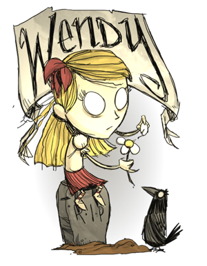
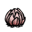

Comfortable with darkness
Doesn't hit very hard
| Wendy | |
|  |
|
| Nickname | The Bereaved |
| Motto | "Abigail! Come back! I'm not done playing with you." |
| Perk | Haunted by her twin sister Comfortable with darkness Doesn't hit very hard |
| Sanity | 200 |
| Health | 150 |
| Hunger | 150 |
| Damage Multiplier | 0.75x |
| Sanity Multiplier | 0.75x |
| Special Item | |
| Starting Items |  |
| “ | Not all deaths are the same. | ” |
| –Wendy | ||
Wendy is the third unlockable Character (640 XP, see Experience for more information on how to unlock her). Wendy has a morbid personality; she always relates everything to death and how depressing life is, including herself.

Abigail's Flower is ready.
Wendy's Special Power is her ability to summon her dead sister Abigail. Wendy will start with depleted Abigail's Flower in her inventory, which will charge up in roughly 2-4 full days, and once it is fully charged it will be able to summon Abigail.
When Abigail's Flower is charged up, it can be placed on the ground to prepare the summoning. The summoning requires a sacrifice, by killing a creature near the flower. When Abigail has come out, it will take 50 points from Wendy's current Sanity level.
Abigail's Flower will be dropped on the ground when Abigail is killed. It will be completely drained and it will have to charge up for 2-4 full days before it can be used again.
Another special power Wendy has is that she suffers 25% less Sanity drain from darkness and from being near monsters.
To balance out the ability to summon Abigail and the lowered sanity drain, Wendy's attacks are weaker than most other characters'. For example, Wendy needs two attacks to kill a Rabbit with the Boomerang or a tool. As such, hunting certain mobs can be much more difficult whilst playing Wendy as she deals less damage by herself.

Abigail
Abigail is Wendy's dead twin sister, that can be summoned using Abigail's Flower.
Abigail follows Wendy and will attack mobs that either attack Wendy or that Wendy herself attacks. Abigail cannot hurt Wendy, and normally doesn't attack any allies, such as Chester or Smallbirds, unless Wendy herself attacks them first. Abigail will always move away from Wendy when she comes too close.
Abigail's attack damages all mobs in range at the same time, which makes Wendy exceptionally strong against groups of mobs like Spiders and Bees as Abigail can keep stunning them to keep them from attacking back.
")
")
")
")
.png.html "CardWendy (Foil).png (131 KB)")
| Player Characters |
| Wilson quotes ⋅ clothes • Willow quotes ⋅ clothes • Wolfgang quotes ⋅ clothes • Wendy quotes ⋅ clothes • WX-78 quotes ⋅ clothes • Wickerbottom quotes ⋅ clothes • Woodie quotes ⋅ clothes • Wes quotes ⋅ clothes • Maxwell quotes ⋅ clothes • Wigfrid quotes ⋅ clothes • Webber quotes ⋅ clothes • Unimplemented |


{kind=link}
{kind=link}
{kind=link}
{kind=link}
{kind=link}
{kind=link}